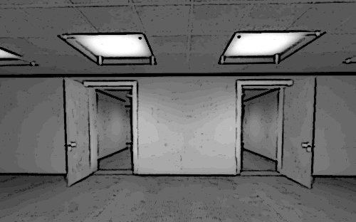

NARRADOR: Estênio se levanta e se dirige ao corredor. Ele não vê nenhum de seus colegas, mas uma porta entreaberta no fim do corredor lhe chama a atenção. Ele caminha até a porta e vê que ela leva para uma sala genérica com duas portas do lado oposto.
NARRADOR: APENAS A PORTA DA DIREITA ESTÁ ABERTA.
NARRADOR: Sem pensar muito Estênio passa pela porta da direita.